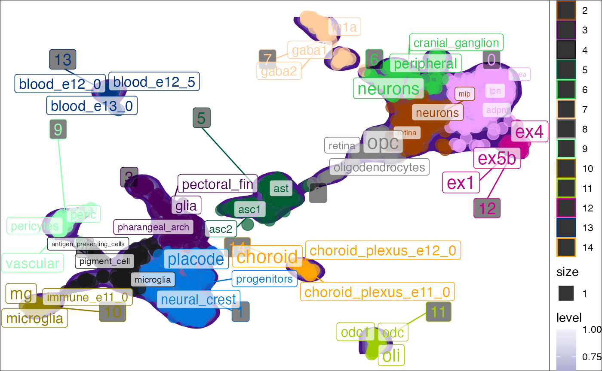
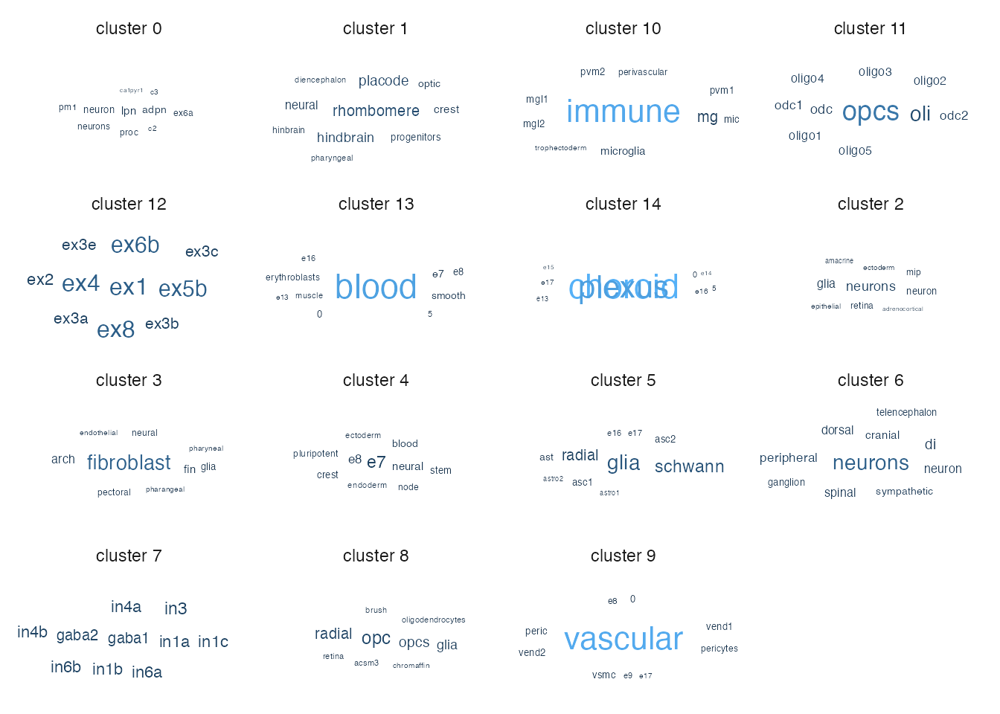

tf-idf
Author: Brian M. Schilder
Most recent update: Jun-24-2021
Source: vignettes/tf-idf.Rmd
tf-idf.RmdIntro
Term frequency–inverse document frequency (tf-idf) is an NLP technique to identify words or phrases that are enriched in one document relative to some other larger set of documents.
In our case, our words are within the non-standardized cell labels and our “documents” are the clusters. The goals is to find words that are enriched in each cluster relative to all the other clusters. This can be thought of as an NLP equivalent of finding gene markers for each cluster.
Examples
Preprocessing
If you don’t already have a Seurat object with reduced dimensions and cluster assignments, you can generate a new one with the following support function.
## Create some mock raw data
counts <- Seurat::GetAssayData(pseudo_seurat)
meta.data <- pseudo_seurat@meta.data
processed_seurat <- seurat_pipeline(counts = counts,
meta.data = meta.data)## Attaching SeuratObject## Warning: Cannot find a parent environment called Seurat## Warning in supportsMulticoreAndRStudio(...): [ONE-TIME WARNING] Forked
## processing ('multicore') is not supported when running R from RStudio
## because it is considered unstable. For more details, how to control forked
## processing or not, and how to silence this warning in future R sessions, see ?
## parallelly::supportsMulticore## Centering and scaling data matrix## PC_ 1
## Positive: RASGRF2, KCNC2, FRRS1L, CBX7, NIPAL2, ZBTB41, DGKE, DOC2A, FMN1, CNKSR2
## MAST1, RBM4, BTBD8, RAPGEF4, JDP2, HCN1, DOCK3, LMTK2, NAB1, RAP1GAP2
## INTU, ADNP2, PARP11, CCDC136, PHF1, ARHGAP26, GALNT13, INPP5E, SYNPR, BMS1
## Negative: GAPDHS, ALG10, SAP18, AGPAT6, IFI30, ATP6V1B1, CBS, HMGB2, RNA28S5, PHYHD1
## PAM16, WNT11, MCM5, SLC7A4, RNMTL1, GNAT2, TMEM184A, PHOX2B, RPSA, RDH13
## BOLA1, GSX2, TMX2, RPS19, EPCAM, ERCC6L, SLC38A4, MAD2L1, SERINC2, ALG11
## PC_ 2
## Positive: UMAD1, SNHG22, MIR646HG, AC007193.6, CTD-2020K17.1, C1QTNF3-AMACR, AC092835.2, CFL1P1, LINC-PINT, AC009403.2
## LINS1, RP11-113E21.3, FAAH2, RP11-3B12.2, CTD-3105H18.18, RP11-11N7.5, CTB-171A8.1, RP11-848P1.9, USP32P3, TARID
## AC091133.1, RP11-1007O24.3, RP11-894J14.5, RP11-144F15.1, RP11-146D12.2, SDHAP1, RP1-184J9.2, RP11-1084E5.1, SCAMP1-AS1, RP11-382A20.4
## Negative: GPRASP1, HAGHL, ZNF664, EIF4G1, CRYZL1, UQCR11, FAM195A, LOC102288414, FNIP1, PYCR2
## EPHB3, CD320, MARS2, PDLIM2, ABCD1, AKT1S1, KISS1R, RWDD3, TMEM256, PCDHGC5
## C8orf37, MAZ, CHERP, BLOC1S3, DGAT2, GRPEL1, ZDHHC12, TMED1, EIF6, XBP1
## PC_ 3
## Positive: RDH13, SLC7A4, RNMTL1, IFI30, AGPAT6, ALG11, TMEM179, CYB5D2, CBS, ALG10
## FKRP, AGO2, TTLL12, SGSM3, MAN1B1, MROH1, TMX2, TADA1, C15orf61, PAF1
## PHYHD1, PRPSAP2, RBM18, MESDC2, HEATR6, CAT, CBFB, MPDU1, FAF1, CCDC47
## Negative: RPS19, RPSA, HMGB2, CCT5, EIF3E, COX5A, TUBB, EIF3K, CLTA, SSR2
## PSMD8, SKP1, VDAC3, MYL12B, EIF3D, HSPD1, MLF2, SFPQ, MED10, EIF5B
## SYNCRIP, PRPF19, EIF6, ATP5L, C1D, MCM5, CHD4, RUVBL1, NIP7, MRPS21
## PC_ 4
## Positive: ZNF285, ZNF468, RN7SL220P, RN7SL460P, DLEU2L, FAM241B, TMSB4Y, ZBTB20-AS4, ZNF781, PILRB
## ATAD3C, MTRNR2L1, CALM2, NBPF9, ZNF571-AS1, ANKK1, ZNF132, ZNF621, CDNF, PHLDB3
## BEST1, SLC2A1-AS1, ZNF66, HRH4, ZNF415, ZNF234, CCDC74B, ZNF554, FMNL1, SLCO1A2
## Negative: TMEM55A, UQCR11, C11orf57, TMEM234, SUV420H2, PAM16, C14orf79, AC084193.1, RP11-396J6.1, IMPG1
## RP11-122C21.1, RP11-556I14.1, RNMTL1, RP3-417G15.1, CNBD2, RP1-102E24.1, CTD-3222D19.12, RP11-486O12.2, RP11-615I2.6, CACNG5
## WBSCR27, PGLS, LOC102288414, SLC7A4, RP11-57A19.4, CTC-448D22.1, RP11-147L13.15, FAM195A, BOLA1, RP11-398M15.1
## PC_ 5
## Positive: PGLS, MT1A, MTRNR2L1, LINC00571, ZNF132, ATAD3C, CXorf40A, TMEM234, AC084193.1, RP11-486O12.2
## RP11-615I2.6, CTD-3222D19.12, RP1-102E24.1, RP11-556I14.1, IMPG1, RP11-122C21.1, RP3-417G15.1, RP11-147L13.15, RP11-396J6.1, RP11-332J15.1
## RP11-57A19.4, RP11-731N10.1, RP11-49K24.4, RP4-758J18.13, RP11-569A11.1, CTC-248O19.1, RP11-395N3.2, TMED11P, RP11-398M15.1, CTC-448D22.1
## Negative: WHSC1, ANKRD32, C19orf40, HCN1, RASGRF2, LOC102288414, GABRB2, CHRM4, C6orf211, RP11-195B21.3
## AGAP9, KIAA2018, FSTL5, C1orf86, RAB1A, NARG2, C10orf118, ATP5L, DSCAML1, CCBL1
## KIAA0247, GPR61, KCNC2, C2CD4C, PLPP6, RP11-146D12.2, PTCHD1, KCNC1, RP11-897M7.4, RAP1GAP2## Computing nearest neighbor graph## Computing SNN## Warning: The default method for RunUMAP has changed from calling Python UMAP via reticulate to the R-native UWOT using the cosine metric
## To use Python UMAP via reticulate, set umap.method to 'umap-learn' and metric to 'correlation'
## This message will be shown once per session## 15:39:35 UMAP embedding parameters a = 0.9922 b = 1.112## 15:39:35 Read 801 rows and found 50 numeric columns## 15:39:35 Using Annoy for neighbor search, n_neighbors = 30## 15:39:35 Building Annoy index with metric = cosine, n_trees = 50## 0% 10 20 30 40 50 60 70 80 90 100%## [----|----|----|----|----|----|----|----|----|----|## **************************************************|
## 15:39:35 Writing NN index file to temp file /var/folders/zq/h7mtybc533b1qzkys_ttgpth0000gn/T//RtmpMeSUNt/file225e75670fb2
## 15:39:35 Searching Annoy index using 10 threads, search_k = 3000
## 15:39:35 Annoy recall = 100%
## 15:39:35 Commencing smooth kNN distance calibration using 10 threads
## 15:39:35 Initializing from normalized Laplacian + noise
## 15:39:36 Commencing optimization for 500 epochs, with 31560 positive edges
## 15:39:37 Optimization finished
## Computing nearest neighbor graph
## Computing SNN## Warning: The following arguments are not used: reduction## Warning: The following arguments are not used: reduction## Modularity Optimizer version 1.3.0 by Ludo Waltman and Nees Jan van Eck
##
## Number of nodes: 801
## Number of edges: 15549
##
## Running Louvain algorithm...
## Maximum modularity in 10 random starts: 0.9069
## Number of communities: 13
## Elapsed time: 0 secondstd-idf annotation
seurat_tfidf will run tf-idf on each cluster and put the results in the enriched_words and tf_idf cols of the meta.data.
pseudo_seurat_tfidf <- run_tfidf(object = pseudo_seurat,
reduction = "UMAP",
cluster_var = "cluster",
label_var = "celltype") ## [1] "+ Extracting data from Seurat object."
## [1] "+ Using reduction: umap"## Joining, by = "word"## Joining, by = "cluster"
## Joining, by = "cluster"
head(pseudo_seurat_tfidf@meta.data)## cluster batch species dataset celltype label
## human.DRONC_human.ASC1 5 DRONC_human human DRONC_human ASC1 ASC1
## human.DRONC_human.ASC2 5 DRONC_human human DRONC_human ASC2 ASC2
## human.DRONC_human.END 9 DRONC_mouse mouse DRONC_mouse END END
## human.DRONC_human.exCA1 0 DRONC_human human DRONC_human exCA1 exCA1
## human.DRONC_human.exCA3 0 DRONC_human human DRONC_human exCA3 exCA3
## human.DRONC_human.exDG 0 DRONC_human human DRONC_human exDG exDG
## nCount_RNA nFeature_RNA RNA_snn_res.0.8 seurat_clusters
## human.DRONC_human.ASC1 237.9283 671 5 5
## human.DRONC_human.ASC2 232.7748 638 5 5
## human.DRONC_human.END 288.9631 616 9 9
## human.DRONC_human.exCA1 245.1858 669 0 0
## human.DRONC_human.exCA3 225.1575 675 0 0
## human.DRONC_human.exDG 237.8823 678 0 0
## UMAP_1 UMAP_2 enriched_words
## human.DRONC_human.ASC1 -0.4796632 0.17629431 glia; schwann; radial
## human.DRONC_human.ASC2 -0.6386602 -0.05231967 glia; schwann; radial
## human.DRONC_human.END -7.7066403 -1.84134831 vascular; peric; pericytes
## human.DRONC_human.exCA1 6.2326443 1.51104526 lpn; adpn; neuron
## human.DRONC_human.exCA3 6.0303471 1.47096417 lpn; adpn; neuron
## human.DRONC_human.exDG 5.9316036 1.49563257 lpn; adpn; neuron
## tf_idf
## human.DRONC_human.ASC1 0.198360552120631; 0.181900967132288; 0.111766521696813
## human.DRONC_human.ASC2 0.198360552120631; 0.181900967132288; 0.111766521696813
## human.DRONC_human.END 0.528096815017439; 0.042313284392222
## human.DRONC_human.exCA1 0.0527542246967963; 0.0523351433907082; 0.0428030761818744
## human.DRONC_human.exCA3 0.0527542246967963; 0.0523351433907082; 0.0428030761818744
## human.DRONC_human.exDG 0.0527542246967963; 0.0523351433907082; 0.0428030761818744td-idf scatter plot
You can also plot the results in reduced dimensional space (e.g. UMAP). plot_tfidf() will produce a list with three items. - data: The processed data used to create the plot. - tfidf_df: The full per-cluster TF-IDF enrichment results. - plot: The ggplot.
Seurat input
res <- plot_tfidf(object = pseudo_seurat,
label_var = "celltype",
cluster_var = "cluster",
show_plot = T)## [1] "+ Extracting data from Seurat object."
## [1] "+ Using reduction: umap"## Joining, by = "word"## Joining, by = "cluster"
## Joining, by = "cluster"## Warning: Ignoring unknown aesthetics: label
You can color the point by other metadata attributes instead.
res <- plot_tfidf(object = pseudo_seurat,
label_var = "celltype",
cluster_var = "cluster",
color_var = "batch",
show_plot = T)## [1] "+ Extracting data from Seurat object."
## [1] "+ Using reduction: umap"## Joining, by = "word"## Joining, by = "cluster"
## Joining, by = "cluster"## Warning: Ignoring unknown aesthetics: label
SingleCellExperiment input
plot_tfidf() can also take in an object of class SingleCellExperiment.
data("pseudo_sce")
res <- plot_tfidf(object = pseudo_sce,
label_var = "celltype",
cluster_var = "cluster",
show_plot = T)
list input
Lastly, if your data doesn’t fit the above example data types, you can simply supply a named list with metadata and embeddings.
data_list <- list(metadata = SingleCellExperiment::colData(pseudo_sce),
embeddings = SingleCellExperiment::colData(pseudo_sce)[,c("UMAP.1","UMAP.2")])
res <- plot_tfidf(object = data_list,
label_var = "celltype",
cluster_var = "cluster",
show_plot = T)## [1] "+ Using data from list."## Joining, by = "word"## Joining, by = "cluster"
## Joining, by = "cluster"## Warning: Ignoring unknown aesthetics: label
Interactive mode
You can also create an interactive version of this plot.
res <- plot_tfidf(object = pseudo_seurat_tfidf,
label_var = "celltype",
cluster_var = "cluster",
interact = T,
show_plot = T,
### Add other metadata vars you want in the hover label like so:
species="species",
dataset="dataset",
enriched_words="enriched_words",
tf_idf="tf_idf") ## [1] "+ Extracting data from Seurat object."
## [1] "+ Using reduction: umap"## Joining, by = "word"## Joining, by = "cluster"
## Joining, by = "cluster"tf-idf wordcloud
You can also show the per-cluster tf-idk results as a wordcloud.
wordcloud_res <- wordcloud_tfidf(object=pseudo_seurat,
label_var = "celltype",
cluster_var = "cluster",
terms_per_cluster=10)## [1] "+ Extracting data from Seurat object."
## [1] "+ Using reduction: umap"## Joining, by = "word"## Joining, by = "cluster"
## Joining, by = "cluster"## Warning: Ignoring unknown aesthetics: label## Warning in wordcloud_boxes(data_points = points_valid_first, boxes = boxes, :
## One word could not fit on page. It has been placed at its original position.
print(wordcloud_res$tfidf_df)## Registered S3 method overwritten by 'cli':
## method from
## print.boxx spatstat.geom## # A tibble: 147 x 8
## # Groups: cluster [15]
## cluster word n total samples tf idf tf_idf
## <fct> <chr> <int> <int> <int> <dbl> <dbl> <dbl>
## 1 0 lpn 3 154 129 0.0195 2.71 0.0528
## 2 0 adpn 4 154 129 0.0260 2.01 0.0523
## 3 0 neuron 6 154 129 0.0390 1.10 0.0428
## 4 0 neurons 5 154 129 0.0325 1.10 0.0357
## 5 0 ex6a 2 154 129 0.0130 2.71 0.0352
## 6 0 pm1 2 154 129 0.0130 2.71 0.0352
## 7 0 proc 2 154 129 0.0130 2.71 0.0352
## 8 0 c2 1 154 129 0.00649 2.71 0.0176
## 9 0 c3 1 154 129 0.00649 2.71 0.0176
## 10 0 ca1pyr1 1 154 129 0.00649 2.71 0.0176
## # … with 137 more rowsSession Info
utils::sessionInfo()## R version 4.1.0 (2021-05-18)
## Platform: x86_64-apple-darwin17.0 (64-bit)
## Running under: macOS Big Sur 10.16
##
## Matrix products: default
## BLAS: /Library/Frameworks/R.framework/Versions/4.1/Resources/lib/libRblas.dylib
## LAPACK: /Library/Frameworks/R.framework/Versions/4.1/Resources/lib/libRlapack.dylib
##
## locale:
## [1] en_GB.UTF-8/en_GB.UTF-8/en_GB.UTF-8/C/en_GB.UTF-8/en_GB.UTF-8
##
## attached base packages:
## [1] stats graphics grDevices utils datasets methods base
##
## other attached packages:
## [1] ggwordcloud_0.5.0 ggplot2_3.3.4 tidytext_0.3.1 future_1.21.0
## [5] SeuratObject_4.0.2 Seurat_4.0.3 scNLP_0.1.0
##
## loaded via a namespace (and not attached):
## [1] systemfonts_1.0.2 plyr_1.8.6
## [3] igraph_1.2.6 lazyeval_0.2.2
## [5] splines_4.1.0 crosstalk_1.1.1
## [7] listenv_0.8.0 SnowballC_0.7.0
## [9] scattermore_0.7 GenomeInfoDb_1.28.0
## [11] digest_0.6.27 htmltools_0.5.1.1
## [13] fansi_0.5.0 magrittr_2.0.1
## [15] memoise_2.0.0 tensor_1.5
## [17] cluster_2.1.2 ROCR_1.0-11
## [19] globals_0.14.0 matrixStats_0.59.0
## [21] pkgdown_1.6.1 spatstat.sparse_2.0-0
## [23] colorspace_2.0-2 ggrepel_0.9.1
## [25] textshaping_0.3.5 xfun_0.24
## [27] dplyr_1.0.7 RCurl_1.98-1.3
## [29] crayon_1.4.1 jsonlite_1.7.2
## [31] Exact_2.1 spatstat.data_2.1-0
## [33] survival_3.2-11 zoo_1.8-9
## [35] glue_1.4.2 polyclip_1.10-0
## [37] pals_1.7 gtable_0.3.0
## [39] zlibbioc_1.38.0 XVector_0.32.0
## [41] leiden_0.3.8 DelayedArray_0.18.0
## [43] SingleCellExperiment_1.14.1 future.apply_1.7.0
## [45] BiocGenerics_0.38.0 maps_3.3.0
## [47] abind_1.4-5 scales_1.1.1
## [49] mvtnorm_1.1-2 DBI_1.1.1
## [51] miniUI_0.1.1.1 Rcpp_1.0.6
## [53] isoband_0.2.4 viridisLite_0.4.0
## [55] xtable_1.8-4 reticulate_1.20
## [57] spatstat.core_2.2-0 mapproj_1.2.7
## [59] proxy_0.4-26 stats4_4.1.0
## [61] htmlwidgets_1.5.3 httr_1.4.2
## [63] RColorBrewer_1.1-2 ellipsis_0.3.2
## [65] ica_1.0-2 farver_2.1.0
## [67] pkgconfig_2.0.3 sass_0.4.0
## [69] uwot_0.1.10 deldir_0.2-10
## [71] utf8_1.2.1 labeling_0.4.2
## [73] tidyselect_1.1.1 rlang_0.4.11
## [75] reshape2_1.4.4 later_1.2.0
## [77] munsell_0.5.0 tools_4.1.0
## [79] cachem_1.0.5 cli_2.5.0
## [81] generics_0.1.0 ggridges_0.5.3
## [83] evaluate_0.14 stringr_1.4.0
## [85] fastmap_1.1.0 yaml_2.2.1
## [87] ragg_1.1.3 goftest_1.2-2
## [89] knitr_1.33 fs_1.5.0
## [91] fitdistrplus_1.1-5 purrr_0.3.4
## [93] RANN_2.6.1 rootSolve_1.8.2.1
## [95] pbapply_1.4-3 nlme_3.1-152
## [97] mime_0.11 tokenizers_0.2.1
## [99] compiler_4.1.0 rstudioapi_0.13
## [101] plotly_4.9.4.1 png_0.1-7
## [103] e1071_1.7-7 spatstat.utils_2.2-0
## [105] tibble_3.1.2 bslib_0.2.5.1
## [107] DescTools_0.99.42 stringi_1.6.2
## [109] highr_0.9 desc_1.3.0
## [111] RSpectra_0.16-0 lattice_0.20-44
## [113] Matrix_1.3-4 vctrs_0.3.8
## [115] pillar_1.6.1 lifecycle_1.0.0
## [117] spatstat.geom_2.2-0 lmtest_0.9-38
## [119] jquerylib_0.1.4 RcppAnnoy_0.0.18
## [121] bitops_1.0-7 data.table_1.14.0
## [123] cowplot_1.1.1 irlba_2.3.3
## [125] lmom_2.8 GenomicRanges_1.44.0
## [127] httpuv_1.6.1 patchwork_1.1.1
## [129] R6_2.5.0 promises_1.2.0.1
## [131] KernSmooth_2.23-20 gridExtra_2.3
## [133] IRanges_2.26.0 janeaustenr_0.1.5
## [135] parallelly_1.26.0 gld_2.6.2
## [137] codetools_0.2-18 dichromat_2.0-0
## [139] boot_1.3-28 MASS_7.3-54
## [141] assertthat_0.2.1 SummarizedExperiment_1.22.0
## [143] rprojroot_2.0.2 withr_2.4.2
## [145] sctransform_0.3.2 GenomeInfoDbData_1.2.6
## [147] S4Vectors_0.30.0 mgcv_1.8-36
## [149] expm_0.999-6 parallel_4.1.0
## [151] grid_4.1.0 rpart_4.1-15
## [153] tidyr_1.1.3 class_7.3-19
## [155] rmarkdown_2.9 MatrixGenerics_1.4.0
## [157] Rtsne_0.15 Biobase_2.52.0
## [159] shiny_1.6.0